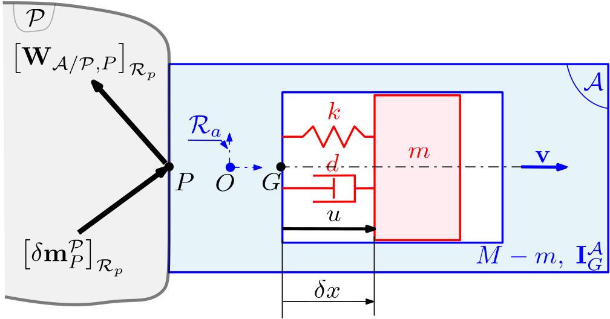
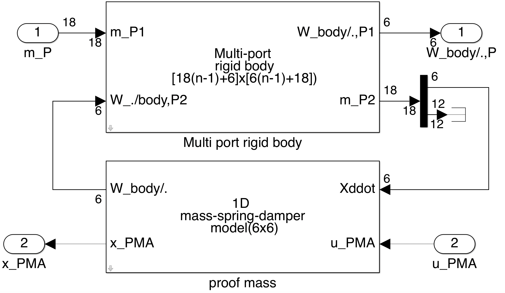
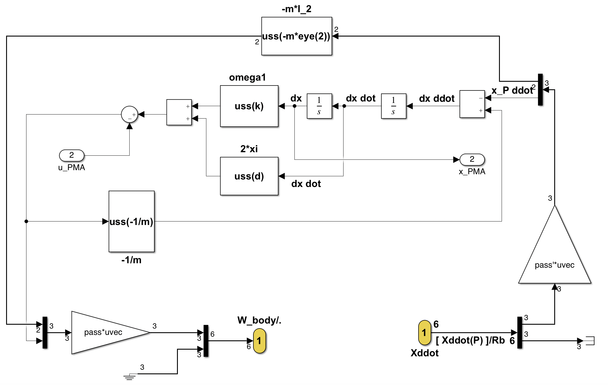

Proof Mass Actuator (PMA)
Model of a PMA
This block implements the $7\times 19$ linear dynamic model of a Proof Mass Actuator $\mathcal{A}$ mounted on a parent body $\mathcal P$. The inputs and the outputs of this model are:
- the $6\times 18$ transfer from the motion vector imposed by the parent body $\mathcal P$ at the connection point $P$ to the wrench applied by $\mathcal{A}$ to the parent body $\mathcal P$ at the point $P$, projected in the parent body frame $\mathcal R_p$,
- and SISO channel from the input signal (a force in $N$ applied to the proof mass) to the relative position of the proof mass wr.t. the caging.
See also: General notations, Sloshing , Reaction wheel linear model, Multi-Port_rigid_body, N-port NASTRAN body
Contents
Description
Let us consider the PMA $\mathcal A$ described in the following Figure:
and let us define:
- $\mathcal R_a$ the local frame attached to the PMA at the reference point $O$,
- $G$ and $P$ the CoM of the PMA (at rest) and the connection point to the parent body $\mathcal P$, respectively,
- $M$ and $\mathbf I^{\mathcal A}_G$ the total mass and the inertial at $G$ of the PMA,
- $m$, $k$, $d$ the mass stifness and damper of the proof mass, working along the axis $\mathbf v$,
- $u$ and $\delta x$ the force appled on the proof mass ant its relatrive displacement,
- $\delta\mathbf m^{\mathcal P}_{P}$: the motion vector ($18\times 1$) of the parent body $\mathcal P$ at the point $P$. $\delta\mathbf m^\mathcal{P}_P=\left[{\boldsymbol{\mathbf{x}''}^\mathcal{P}_P}^T\;\;{\delta\boldsymbol{\mathbf x'}^\mathcal{P}_P}^T\;\;{\delta\mathbf{x}^\mathcal{P}_P}^T\right]^T$ with $\boldsymbol{\mathbf{x}''}^\mathcal{P}_P= \left[ {\mathbf{a}^{\mathcal P}_P}^T \;\; {\boldsymbol{\dot\omega}^{\mathcal P}}^T \right]^T$,
- $\mathbf{W}_{\mathcal{A/P},P}=\left[ \mathbf{F}_{\mathcal{A/P}}^T \;\; \mathbf{T}_{\mathcal{A/P},P}^T \right]^T$: the wrench applied by $\mathcal{A}$ to the parent body $\mathcal P$ at the point $P$,
The dynamic model of the PMA is governed by the following equations: $$ m([\mathbf{v}^T\;\;\mathbf{0}]\boldsymbol{\mathbf{x}''}^\mathcal{P}_{G}+\ddot{\delta x})=-k\,\delta x -d \,\dot{\delta x}+u, $$ $ \boldsymbol{\mathbf{x}''}^\mathcal{P}_{G}=\boldsymbol{\tau}_{GP}\boldsymbol{\mathbf{x}''}^\mathcal{P}_{P} $ where $\boldsymbol\tau_{GP}$ is the kinematic model between points $G$ and $P$. $$ \mathbf{W}_{\mathcal{A}/\mathcal P,P}=- \boldsymbol{\tau}_{GP}^T\left(\left[\begin{array}{cc}M\mathbf{1}_3 & \mathbf{0}_3 \\ \mathbf{0}_3 & \mathbf I^{\mathcal A}_G\end{array}\right]\boldsymbol{\tau}_{GP}\boldsymbol{\mathbf{x}''}^\mathcal{P}_{P} + m\left[\begin{array}{c} \mathbf v \\ \mathbf{0} \end{array}\right]\ddot{\delta x}\right)\;. $$
Ports
Inputs:
- m: the motion vector $\left[\delta\mathbf{m}^{\mathcal P}_P \right]_{\mathcal{R}_p}$ (units: $m/s^2$, $rd/s^2$, $m/s$, $rd/s$, $m$, $rd$) at point $P$ in the parent body frame $\mathcal{R}_p$.
- u_PMA: the control signal $u$ ($N$).
Outputs:
- Wbody/.: the wrench $\left[ \mathbf{W}_{\mathcal{A/P},P} \right]_{\mathcal{R}_p}$ (units: $N$ and $N.m$) applied by the body $\mathcal{A}$ at point $P$ to the parent body $\mathcal P$, projected in $\mathcal R_p$.
- x_PMA: the relative displacement $\delta x$ of the proof mass ($m$).
Parameters
- the total mass: $\mathbf M$ ($Kg$),
- the tolal inertai at $G$: $\mathbf I^{\mathcal A}_G$ ($Kg\,m^2$),
- the geometry defined by $3\times 1$ vectors $\overrightarrow{OG}$, $\overrightarrow{OP}$ ($m$),
- the $3\times 1$ vector defining the working axis: $\mathbf v$,
- the stiffness: $k$ ($N/m$),
- the proof mass: $m$ ($Kg$),
- the damping: $d$ ($Ns/m$).
Simulink diagram under the mask

The mask of the 1-d spring-mass damper model is:
